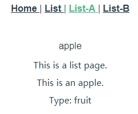

实例
2019.07.04 @wsl
1. Vue Router入门
安装：
vue-router是一个插件包，所以我们还是需要用npm来进行安装的。
npm install vue-router --save-dev
router/index.js文件
import Vue from 'vue'; //引入Vue
import Router from 'vue-router'; //引入vue-router
import Hello from '@/components/Hello'; //引入根目录下的Hello.vue组件
Vue.use(Router) //Vue全局使用Router
export default new Router({
routes: [ //配置路由，这里是个数组
{ //每一个链接都是一个对象
path: '/', //链接路径
name: 'Hello', //路由名称，
component: Hello //对应的组件模板
},
]
})
增加路由
import Vue from 'vue';
import Router from 'vue-router';
import Hello from '@/components/Hello';
import List from '@/components/List'; // 引入List组件
Vue.use(Router);
export default new Router({
routes: [
{
path: '/',
name: 'Hello',
component: Hello,
},
{ // 增加路由配置
path: '/list',
name: 'List',
component: List,
},
]
})
router-link 制作导航
<router-link to="/link">[显示字段]</router-link>
to: 导航路径，index.js里的path值。
2. vue-router 配置子路由
改写母模板List：
<template>
<div class="list">
This is a list page.
<router-view class="list-router" />
</div>
</template>
<script>
export default {
name: 'List',
};
</script>
编写子路由组件Apple, Banana：
<template>
<div class="apple">
{{ msg }}
</div>
</template>
<script>
export default {
name: 'Apple',
data() {
return {
msg: 'This is an apple.',
};
},
};
</script>
<template>
<div class="banana">
{{ msg }}
</div>
</template>
<script>
export default {
name: 'Banana',
data() {
return {
msg: 'This is an banana.',
};
},
};
</script>
在router.js里面引入子路由：
{
path: '/list',
name: 'List',
component: List,
children: [
{ path: '/', component: List },
{ path: 'apple', component: Apple },
{ path: 'banana', component: Banana },
],
},
App.vue内写路由导航：
<template>
<div id="app">
<div id="nav">
<router-link to="/">
Home
</router-link> |
<router-link to="/list">
List
</router-link> |
<router-link to="/list/apple">
List-A
</router-link> |
<router-link to="/list/banana">
List-B
</router-link>
</div>
<router-view />
</div>
</template>
效果：

3. vue-router 如何参数传递
1) 用name传递参数
a. 在路由文件 router.js 里配置 name 属性。
{
path: '/list',
name: 'list',
component: List,
children: [
{ path: '/', name: 'list', component: List },
{ path: 'apple', name: 'apple', component: Apple },
{ path: 'banana', name: 'banana', component: Banana },
],
},
b. 模板里 App.vue 用 $route.name 的形式接收。
<template>
<div id="app">
<div id="nav">
<router-link to="/">
Home
</router-link> |
<router-link to="/list">
List
</router-link> |
<router-link to="/list/apple">
List-A
</router-link> |
<router-link to="/list/banana">
List-B
</router-link>
</div>
<p>{{ $route.name }}</p>
<router-view />
</div>
</template>
效果：

2) 通过\ 标签中的to传参
语法：
<router-link :to="{name:xxx,params:{key:value}}">valueString</router-link>
这里的to前边是带冒号的，然后后边跟的是一个对象形式的字符串。
name：就是我们在路由配置文件中起的name值。params：就是我们要传的参数，它也是对象形式，在对象里可以传递多个值。
a. 改造router-link，name为router.js中配置路由的name：
<router-link
:to="{name: 'apple', params: {cate: 'fruit'}}"
>
List-A
</router-link>
b. 在路由对应模板里，可以使用传进的参数。$route.params.cate
<template>
<div class="apple">
<p>{{ msg }}</p>
<p>Type: {{ $route.params.cate }}</p>
</div>
</template>
效果：

4. 单页面多路由区域操作
在一个页面里面有两个以上<router-view>区域，通过配置路由的js文件，来操作这些区域的内容。
在App.vue里面建立多个路由区域，命名为 left, right，默认 default，通过 router-link 配置路由链接：
<template>
<div id="app">
<div id="nav">
<router-link to="/apple">
Apple
</router-link> |
<router-link to="/banana">
Banana
</router-link>
</div>
<router-view />
<router-view
name="left"
style="float:left;width:50%;background-color:#ccc;height:200px;"
/>
<router-view
name="right"
style="float:right;width:50%;background-color:#c0c;height:200px;"
/>
</div>
</template>
在 router.js里面配置这三个区域，在 components 字段中：
{
path: '/apple',
components: {
default: List,
left: Apple,
right: Banana,
},
},
{
path: '/banana',
components: {
default: List,
left: Banana,
right: Apple,
},
},
效果：

5. vue-router 利用url传递参数
:冒号的形式传递参数
a. 在路由配置文件中，以:冒号的形式传递参数，这就是对参数的绑定。
{
path: '/news/:newsId/:newsTitle',
component: News,
},
b. News组件
<template>
<div class="news">
<p>{{ $route.params.newsId }}</p>
<p>{{ $route.params.newsTitle }}</p>
</div>
</template>
<script>
export default {
name: 'News',
};
</script>
c. 通过url传参
<router-link to="/news/n001/Who are you">
news01
</router-link>
效果：

正则表达式在URL传值中的应用
vue的url传参，支持正则表达式，以圆括号形式写入即可。
path:'/params/:newsId(\\d+)/:newsTitle',
该正则限制了新闻ID只能是数字的形式，加入了正则，我们再传递数字之外的其他参数，News组件就没有办法接收到。
6. vue-router 的重定向 redirect
开发中有时候我们虽然设置的路径不一致，但是我们希望跳转到同一个页面，或者说是打开同一个组件。这时候我们就用到了路由的重新定向redirect参数。
redirect基本重定向
只要在路由配置文件中把原来的component换成redirect参数就可以了。
{
path: '/listv2',
redirect: '/apple',
},
重定向时传递参数
重定向时如果也需要传递参数怎么办？其实vue也已经为我们设置好了，我们只需要在ridirect后边的参数里复制重定向路径的path参数就可以了。
{
path: '/news/:newsId(\\d+)/:newsTitle',
component: News,
},
{
path: '/gonews/:newsId(\\d+)/:newsTitle',
redirect: '/news/:newsId(\\d+)/:newsTitle',
}
7. alias 别名的使用
使用alias别名的形式，也可以实现类似重定向的效果。
a. 在路由配置文件里，为路径起一个别名
{
path: '/',
name: 'home',
component: Home,
alias: '/home',
},
b. 起过别名之后，可以直接使用<router-link>标签里的to属性，进行重新定向。
<router-link to="/home">
home
</router-link>
redirect和alias的区别
- redirect：仔细观察URL，redirect是直接改变了url的值，把url变成了真实的path路径。
- alias：URL路径没有别改变，这种情况更友好，让用户知道自己访问的路径，只是改变了
<router-view>中的内容。
8. 路由的过渡动画
<transition>标签
a. 想让路由有过渡动画，需要在<router-view>标签的外部添加<transition>标签，标签还需要一个name属性。
<transition name="fade">
<router-view />
</transition>
css过渡类名： 组件过渡过程中，会有四个CSS类名进行切换，这四个类名与transition的name属性有关，比如name=”fade”,会有如下四个CSS类名：
- fade-enter:进入过渡的开始状态，元素被插入时生效，只应用一帧后立刻删除。
- fade-enter-active:进入过渡的结束状态，元素被插入时就生效，在过渡过程完成后移除。
- fade-leave:离开过渡的开始状态，元素被删除时触发，只应用一帧后立刻删除。
- fade-leave-active:离开过渡的结束状态，元素被删除时生效，离开过渡完成后被删除。
b. 设置css样式
.fade-enter {
opacity: 0;
}
.fade-leave{
opacity: 1;
}
.fade-enter-active{
transition: opacity .5s;
}
.fade-leave-active{
opacity: 0;
transition: opacity .5s;
}
过渡模式mode：
in-out：新元素先进入过渡，完成之后当前元素过渡离开。out-in：当前元素先进行过渡离开，离开完成后新元素过渡进入。
默认 mode 为 in-out，可以进行配置：
<transition name="fade" mode="out-in">
<router-view />
</transition>
9. mode的设置和404页面的处理
mode的两个值
路由有一个mode属性。
histroy：URL 就像正常的 url，url/path。利用history.pushState API来完成URL跳转。符合普通链接样式，比较美观。hash：默认’hash’值，url/#/path。URL改变时，页面不会重新加载。
404页面的设置：
当用户输错页面时，我们希望给他一个友好的提示，这个页面就是我们常说的404页面。
a. 设置路由配置文件
{
path: '*',
component: Error404,
},
b. 新建404页面
<template>
<div class="error-404">
<div>{{ msg }}</div>
</div>
</template>
<script>
export default {
name: 'Error404',
data() {
return {
msg: '404错误',
};
},
};
</script>
此时，用户输错页面后，显示的就是这个错误页。
10. 路由中的钩子
一个组件从进入到销毁有很多的钩子函数，同样在路由中也设置了钩子函数。路由的钩子选项可以写在路由配置文件中，也可以写在组件模板中。
路由配置文件中的钩子函数
{
path: '/news/:newsId/:newsTitle',
component: News,
beforeEnter: (to, from, next) => {
console.log('beforeEnter News', to, from);
next();
}
},
三个参数：
to:路由将要跳转的路径信息，信息是包含在对像里边的。from:路径跳转前的路径信息，也是一个对象的形式。next:路由的控制参数，常用的有next(true)和next(false)。
写在模板中的钩子函数
在配置文件中的钩子函数，只有一个钩子-beforeEnter，如果我们写在模板中就可以有两个钩子函数可以使用：
- beforeRouteEnter：在路由进入前的钩子函数。
- beforeRouteLeave：在路由离开前的钩子函数。
export default {
name: 'News',
beforeRouteEnter: (to, from, next) => {
console.log('beforeRouteEnter', to, from);
next();
},
beforeRouteLeave: (to, from, next) => {
console.log('beforeRouteLeave', to, from);
next();
},
};
11. 编程式导航
编程式导航，顾名思义，就是在业务逻辑代码中实现导航。
this.$router.go(-1) 和 this.$router.go(1)
这两个编程式导航的意思是后退和前进，功能跟我们浏览器上的后退和前进按钮一样，这在业务逻辑中经常用到。比如条件不满足时，我们需要后退。
router.go(-1)代表着后退，我们可以让我们的导航进行后退，并且我们的地址栏也是有所变化的。
a. 在app.vue文件里加入一个按钮，按钮并绑定一个goback( )方法。
<button @click="goBack">
BACK
</button>
b. 在script模块中写入goback()方法，并使用this.$router.go(-1),进行后退操作。
<script>
export default {
name: 'App',
methods: {
goBack() {
this.$router.go(-1);
},
},
};
</script>
router.go(1):代表着前进，用法和后退一样。
this.$router.push
this.$router.push('/xxx')：作用是跳转。
a. 先编写一个按钮，在按钮上绑定goHome()方法。
<button @click="goHome">
回到首页
</button>
b. 在<script>模块里加入goHome方法，并用this.$router.push('/')导航到首页
goHome() {
this.$router.push('/');
},